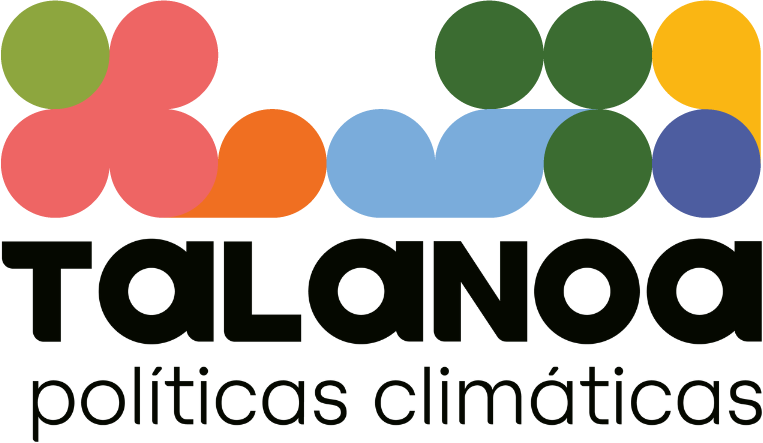
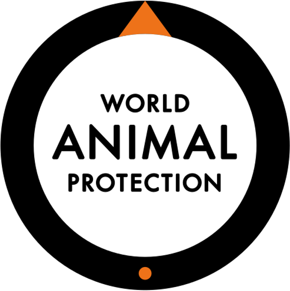
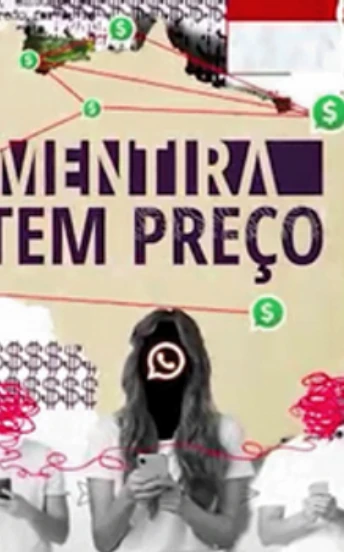

Dados e IA para clima, meio ambiente e direitos.
Alguns dos projetos que a equipe desenvolveu antes da Iara, com organizações que trabalham com política climática, proteção ambiental, direitos dos animais e combate à desinformação.

Monitoramento das políticas climáticas do Brasil
Acompanhar as políticas climáticas de um país no centro do debate sobre o clima é essencial para tornar as decisões de governo mais transparentes para a sociedade civil. O Instituto Talanoa, think tank brasileiro, é referência nessa área. A equipe trabalhou para que toda a infraestrutura e os mecanismos de classificação inteligente das ações de governo continuem entregando, de forma consistente, os insumos de que a equipe de especialistas do Talanoa precisa para analisar o cenário nacional.
Instituto Talanoa

Como o debate sobre direitos dos animais se forma no Brasil
Análise de discurso com IA para entender os atores, as conexões e as tendências do debate sobre animais de estimação, animais silvestres e pecuária no país.
“[…] filtramos e analisamos esses dados para ter uma compreensão profunda de como esse discurso está sendo moldado no país, identificando atores-chave, pontos de conexão e tendências emergentes. Esses insights são fundamentais para orientar, com precisão e impacto, nossas estratégias de engajamento em campanhas.”
Rodrigo Gerhardt, World Animal Protection (WAP)

A Mentira Tem Preço
Mapeamento de conversas no YouTube sobre meio ambiente, clima e discurso de ódio no Brasil, para o projeto que expõe o alto custo da desinformação climática desde 2020.
“A desinformação climática distorce nossa percepção das soluções para o clima, enfraquece políticas públicas nacionais e internacionais e, nos territórios locais, se traduz em ameaças, divisão e morte. ‘A Mentira Tem Preço’ expõe o alto custo da desinformação sobre clima, meio ambiente e discurso de ódio no Brasil desde 2020. […] desenvolvemos uma metodologia para mapear conversas no YouTube sobre meio ambiente, clima e discurso de ódio no Brasil.”
Thaís Lazzeri, FALA e A Mentira Tem Preço
Quer a Iara na sua secretaria?
Escreva para nós e conversamos sobre a implantação no seu município, estado ou órgão.